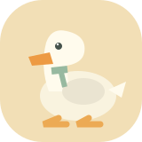

‹

抓大鹅
GOOSE MARKET
⛶
鹅鹅集市
⚙
WELCOME TO THE LITTLE MARKET
锅里有惊喜，
还有一只
大白鹅。
找三个一样的，把鹅鹅带回家。
03:00
＋3分钟
Ⅱ
TODAY'S LITTLE JOY
3D 实物
鹅鹅正在摆摊…
每三件相同的物品，消除一组
↝ 颠一颠
开锅，抓鹅！
→
挑选集市
我的鹅鹅
0 / 8
怎么玩？
不看广告，放心玩 · 进度自动保存在本机
我的收集栏
0 / 7
↶ 撤回
三个相同，自动消除
暂放区
移出后，点击拿回来
↗
移出
免费
🧲
凑齐
免费
✣
打乱
免费
点击物品收集 · 拖动锅或点按钮颠锅
玩法说明
保存 · 回集市
×